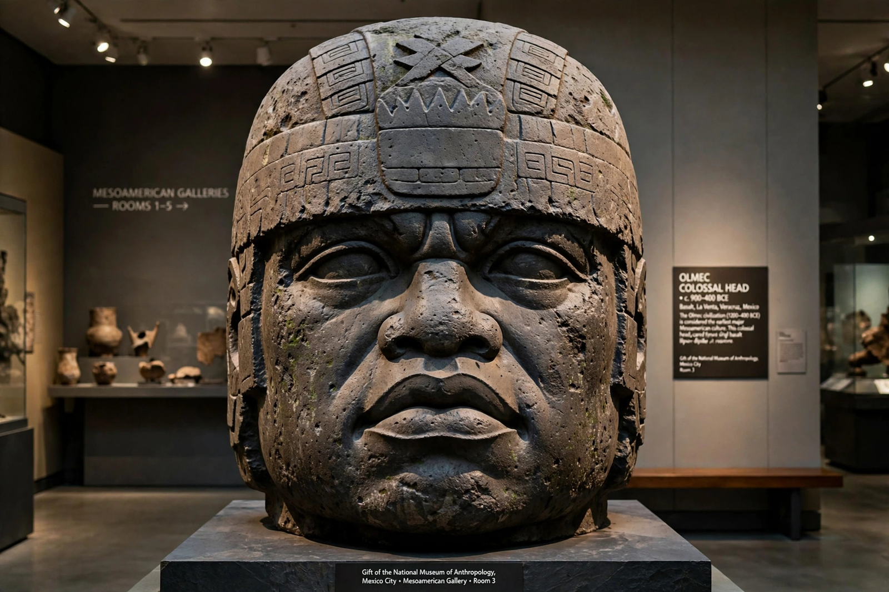

| Olmec civilisation | |
 A colossal head from San Lorenzo | |
| Region | Gulf Coast lowlands of present-day Veracruz and Tabasco, Mexico |
|---|---|
| Period | c. 1500–400 BC (Formative) |
| Major sites | San Lorenzo, La Venta, Tres Zapotes |
| Known for | Colossal heads, early writing and calendrics, ballgame |
The Olmecs were an early civilisation of Mesoamerica, flourishing in the tropical lowlands of the Gulf of Mexico — in what is now the Mexican states of Veracruz and Tabasco — from about 1500 BC until about 400 BC. Widely regarded as a "mother culture" of Mesoamerica, the Olmecs developed many features later characteristic of the region: monumental stone sculpture, stepped pyramids, the ritual ballgame, and possibly early forms of writing and the Long Count calendar.
"Olmec" comes from the Nahuatl Ōlmān / Ōlmēcah, "people of the rubber country", the Aztec-era name for the inhabitants of the Gulf lowlands — not necessarily the ancient Olmecs' own name, which is unknown.
The Olmec heartland lies in the riverine lowlands between the Coatzacoalcos and Tonalá river systems. The first great centre, San Lorenzo, dominated c. 1200–900 BC; after its decline, La Venta rose to prominence (c. 900–400 BC), with one of the earliest Mesoamerican pyramids; Tres Zapotes survived longest, into the early centuries AD.
Olmec art is famous for its colossal basalt heads — seventeen are known, each several metres tall and weighing many tonnes, generally interpreted as portraits of rulers. Jade and serpentine figurines, "were-jaguar" motifs, and massive stone thrones (once called altars) are also characteristic. The basalt was quarried in the Tuxtla Mountains and transported tens of kilometres, largely by river raft.
Olmec-style artefacts appear across Mesoamerica, though scholars debate whether this reflects political dominion, trade, or shared religious ideas. The civilisation declined by around 400 BC for reasons that remain unclear; its legacy passed to successor cultures including the Maya and the epi-Olmec cultures that produced early inscriptions such as those at La Mojarra.